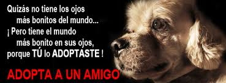

Ofrecer soluciones que apunten a combatir tal problema de salud y convivencia pública, promocionando las adopciones de animales rescatados y recuperados del abandono, llevando adelante de forma sistemática campañas masivas de esterilización en perros y gatos, como el único método estadísticamente comprobado, siendo a la vez eficiente, eficaz, ético y libre de crueldad, para hacerle frente a la sobrepoblación callejera. Fomentando un trabajo educativo que involucre a los ciudadanos dentro de sus comunidades, siendo éstas capaces de establecer vínculos y alianzas, con las distintas instituciones dispuestas a cooperar en la solución del problema, enmarcados siempre bajo estos principios rectores.
TODOS DEBEMOS SER PARTE DEL CAMBIO, PODEMOS SER MEJORES. Contactenos en Duitama (Boyaca) a los mumeros: 3123531831 0 3112580927